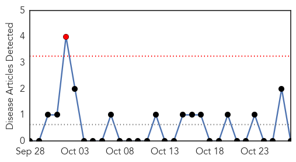
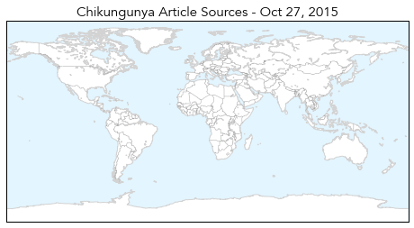
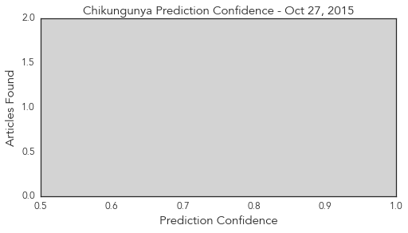

Chikungunya
30-Day Web Trend
1 alerts, 0 warnings

30-Day Twitter Trend
2 alerts, 0 warnings

Article Locations
Article Confidences
Top Articles:
-
No articles found for Oct 27, 2015
Top Tweets:
-
No tweets found for Oct 27, 2015
Influenza
30-Day Web Trend
6 alerts, 7 warnings

30-Day Twitter Trend
0 alerts, 0 warnings

Article Locations

Article Confidences

Top Articles:
- 0.999
- Ministry of Health advises public of Seasonal Influenza
- 0.998
- Health, Wellness and Medical Care in Prague and Czech Republic,
- 0.994
- Flu shots now available in Grey-Bruce
- 0.992
- Get a flu shot before it is too late
- 0.982
- Premier McNeil: This won’t hurt a bit
- 0.965
- Flu shots now available for season
- 0.943
- Tragedy prompts family to raise awareness
- 0.893
- Articles, event listings and opinion
- 0.886
- ‘Flu Shots’ Offered in a Variety of Ways
- 0.878
- Albertans encouraged to get Flu shots
- 0.813
- Today's stories from newspapers in Ottawa
- 0.810
- Spread of unknown dog illness in Orangeville raises new flags across Ontario
- 0.800
- Today's stories from newspapers in Ottawa
- 0.787
- Today's stories from newspapers in Orangeville
- 0.783
- Today's stories from newspapers in Norfolk County
- 0.699
- SCH campaign on flu vaccination begins
- 0.519
- Exercise Camellia ensures AFCD is prepared for avian influenza outbreak
Top Tweets:
- 0.548
- RT: Look who got his flu shot today!! Respiratorythursday influenza vaccination LGBThealth menshealth Myownadvice http://t…